Module Annotation for Pathway enrichment Analysis result
Xiaotao Shen (https://jaspershen.github.io/)
Created on 2021-12-04 and updated on 2023-10-20
Source:vignettes/mapa.Rmd
mapa.RmdLoad demo data
library(mapa)
if(!require(massdataset)){
remotes::install_gitlab("tidymass/massdataset")
}
if(!require(org.Hs.eg.db)){
BiocManager::install("org.Hs.eg.db")
}
data("demo_data", package = "mapa")
load("demo_data.rda")
demo_data
#> --------------------
#> massdataset version: 1.0.27
#> --------------------
#> 1.expression_data:[ 359 x 8 data.frame]
#> 2.sample_info:[ 8 x 2 data.frame]
#> 8 samples:(0,14] (14,16] (16,20] ... (34,38] (38,42]
#> 3.variable_info:[ 359 x 8 data.frame]
#> 359 variables:protein_262 protein_270 protein_192 ... protein_354 protein_356
#> 4.sample_info_note:[ 2 x 2 data.frame]
#> 5.variable_info_note:[ 8 x 2 data.frame]
#> 6.ms2_data:[ 0 variables x 0 MS2 spectra]
#> --------------------
#> Processing information
#> 1 processings in total
#> create_mass_dataset ----------
#> Package Function.used Time
#> 1 massdataset create_mass_dataset() 2023-10-17 21:27:50Pathway enrichment
variable_info <-
demo_data %>%
massdataset::activate_mass_dataset(what = "variable_info") %>%
dplyr::filter(fdr < 0.05 & score > 0) %>%
massdataset::extract_variable_info()
enriched_pathways <-
enrich_pathway(
variable_info = variable_info,
save_to_local = FALSE,
path = "result",
OrgDb = org.Hs.eg.db,
organism = "hsa",
database = c("go", "reactome", "kegg"),
ont = "ALL",
pvalueCutoff = 0.05,
pAdjustMethod = "BH",
qvalueCutoff = 0.2,
minGSSize = 10,
maxGSSize = 500,
readable = FALSE,
pool = FALSE
)
enriched_pathways
#> --------------------
#> Processing information
#> 1 processings in total
#> enrich_pathway ----------
#> Package Function.used Time
#> 1 mapa enrich_pathway() 2023-10-20 21:30:08Merge pathways to get the modules
enriched_modules <-
merge_pathways(
object = enriched_pathways,
p.adjust.cutoff.go = 0.05,
p.adjust.cutoff.kegg = 0.05,
p.adjust.cutoff.reactome = 0.05,
count.cutoff.go = 5,
count.cutoff.kegg = 5,
count.cutoff.reactome = 5,
sim.cutoff.go = 0.5,
sim.cutoff.kegg = 0.5,
sim.cutoff.reactome = 0.5,
measure.method.go = "Wang",
measure.method.kegg = "jaccard",
measure.method.reactome = "jaccard",
path = "result",
save_to_local = FALSE
)
enriched_modules
#> --------------------
#> Processing information
#> 2 processings in total
#> enrich_pathway ----------
#> Package Function.used Time
#> 1 mapa enrich_pathway() 2023-10-20 21:30:08
#> merge_pathways ----------
#> Package Function.used Time
#> 1 mapa merge_pathways() 2023-10-20 21:32:02Merge modules to get functional modules
enriched_functional_module <-
merge_modules(
object = enriched_modules,
sim.cutoff = 0.5,
measure_method = c("jaccard"),
path = "result",
save_to_local = FALSE
)Check the enriched pathways/modules
plot_pathway_bar(
object = enriched_functional_module,
top_n = 20,
level = "pathway",
database = "go"
)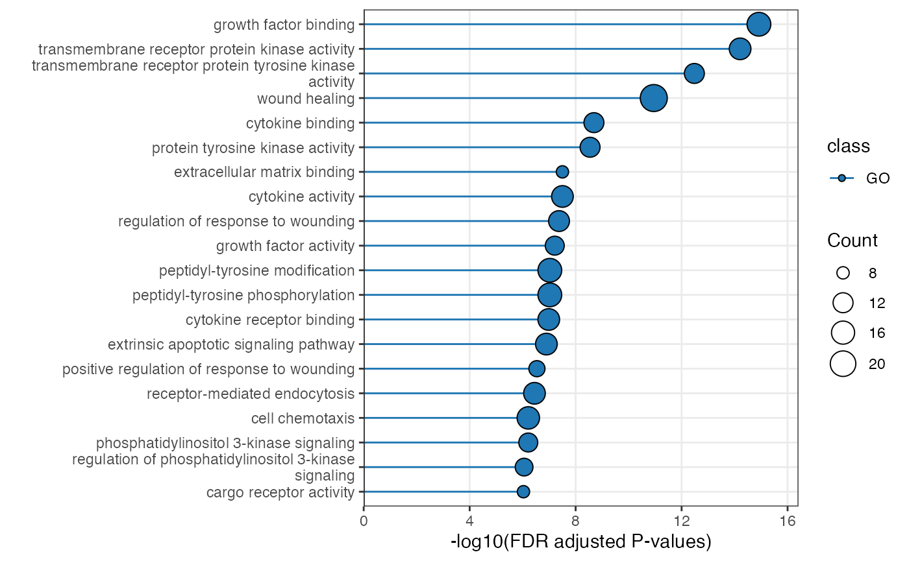
plot_pathway_bar(
object = enriched_functional_module,
top_n = 20,
level = "pathway",
database = "kegg"
)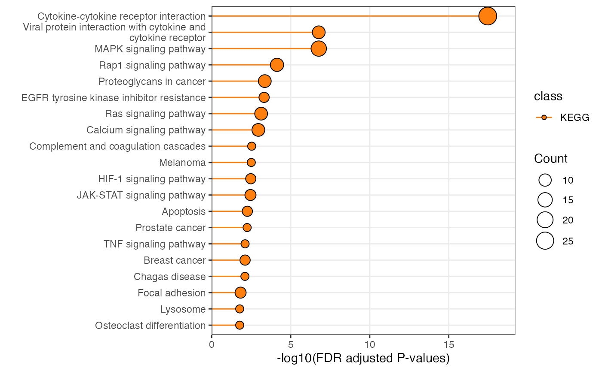
plot_pathway_bar(
object = enriched_functional_module,
top_n = 20,
level = "pathway",
database = "reactome"
)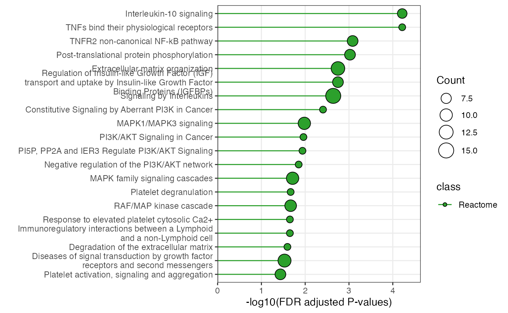
# plot_pathway_bar(object = enriched_functional_module,
# top_n = 20,
# level = "module")
plot_pathway_bar(object = enriched_functional_module,
top_n = 20,
level = "functional_module")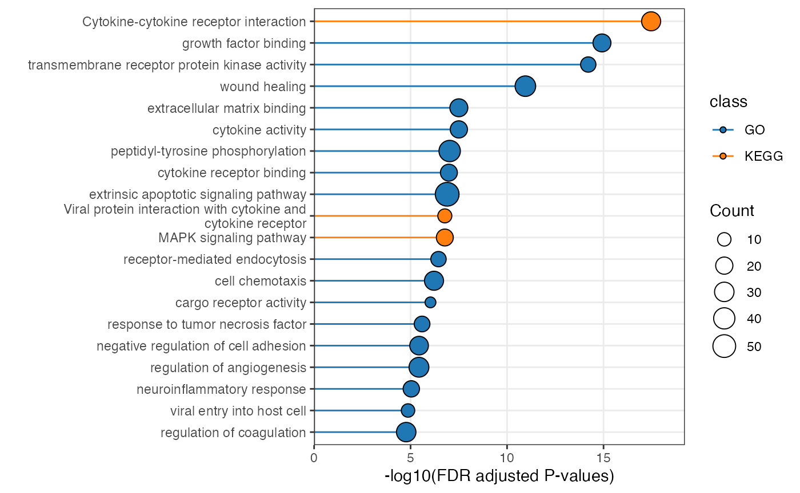
Check the individual module
plot <-
plot_module_info(
object = enriched_functional_module,
level = "module",
database = "go",
module_id = "go_Module_3"
)
plot_module_info(
object = enriched_functional_module,
level = "module",
database = "kegg",
module_id = "kegg_Module_15"
)
#> $network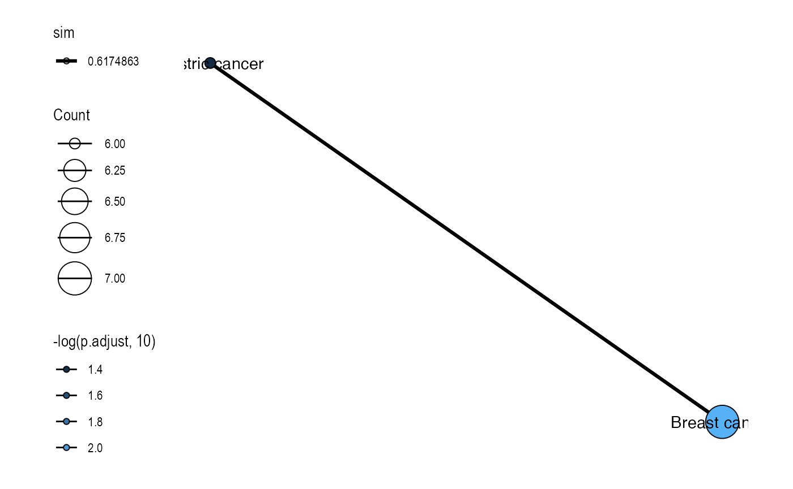
#>
#> $barplot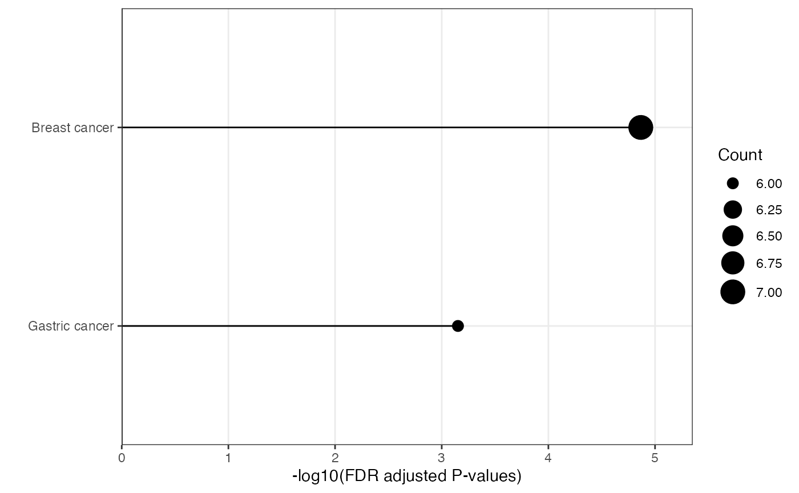
#>
#> $wordcloud
enriched_functional_module@merged_module$functional_module_result$module
#> [1] "Functional_module_52" "Functional_module_1" "Functional_module_2"
#> [4] "Functional_module_3" "Functional_module_4" "Functional_module_5"
#> [7] "Functional_module_6" "Functional_module_7" "Functional_module_8"
#> [10] "Functional_module_53" "Functional_module_54" "Functional_module_9"
#> [13] "Functional_module_10" "Functional_module_11" "Functional_module_12"
#> [16] "Functional_module_13" "Functional_module_14" "Functional_module_15"
#> [19] "Functional_module_16" "Functional_module_17" "Functional_module_18"
#> [22] "Functional_module_19" "Functional_module_20" "Functional_module_70"
#> [25] "Functional_module_71" "Functional_module_21" "Functional_module_22"
#> [28] "Functional_module_23" "Functional_module_24" "Functional_module_25"
#> [31] "Functional_module_26" "Functional_module_27" "Functional_module_28"
#> [34] "Functional_module_55" "Functional_module_29" "Functional_module_56"
#> [37] "Functional_module_72" "Functional_module_30" "Functional_module_31"
#> [40] "Functional_module_32" "Functional_module_73" "Functional_module_74"
#> [43] "Functional_module_33" "Functional_module_34" "Functional_module_35"
#> [46] "Functional_module_36" "Functional_module_37" "Functional_module_38"
#> [49] "Functional_module_57" "Functional_module_39" "Functional_module_40"
#> [52] "Functional_module_58" "Functional_module_59" "Functional_module_41"
#> [55] "Functional_module_42" "Functional_module_43" "Functional_module_60"
#> [58] "Functional_module_61" "Functional_module_44" "Functional_module_62"
#> [61] "Functional_module_63" "Functional_module_64" "Functional_module_45"
#> [64] "Functional_module_46" "Functional_module_47" "Functional_module_65"
#> [67] "Functional_module_66" "Functional_module_67" "Functional_module_75"
#> [70] "Functional_module_76" "Functional_module_48" "Functional_module_77"
#> [73] "Functional_module_49" "Functional_module_50" "Functional_module_68"
#> [76] "Functional_module_51" "Functional_module_69"
plot_module_info(object = enriched_functional_module,
level = "functional_module",
module_id = "Functional_module_17")
#> $network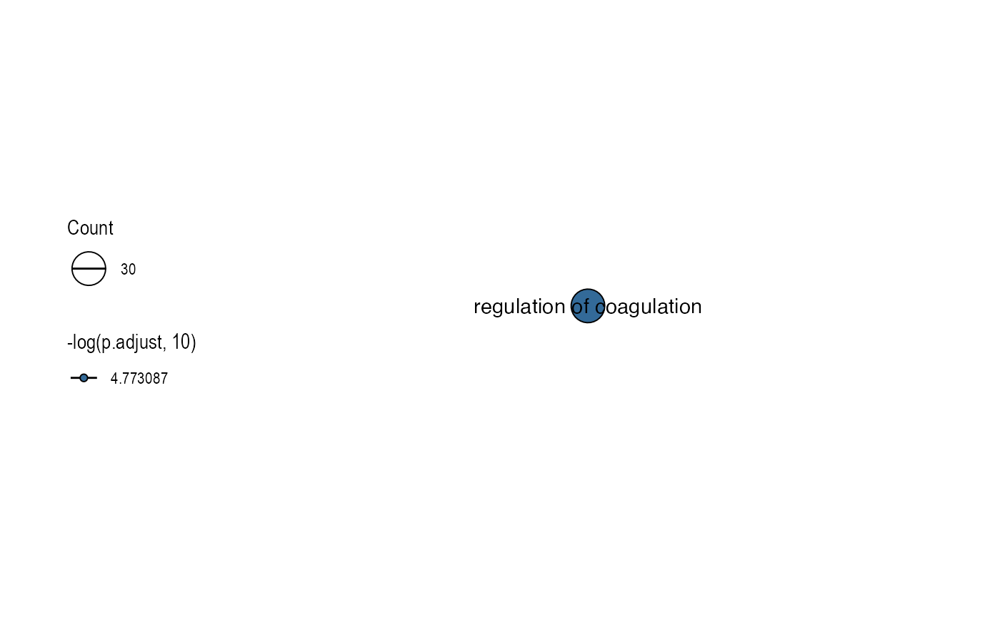
#>
#> $barplot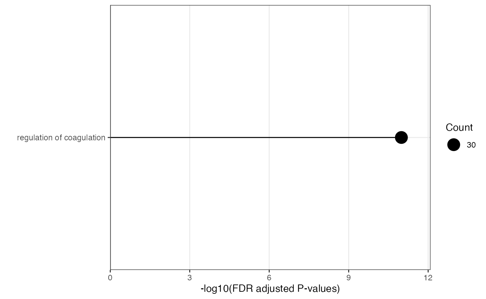
#>
#> $wordcloud
# export_module_info_plot(object = object, path = "result2")The whole similary network
plot_similarity_network(
object = enriched_functional_module,
level = "module",
database = "go",
degree_cutoff = 10
)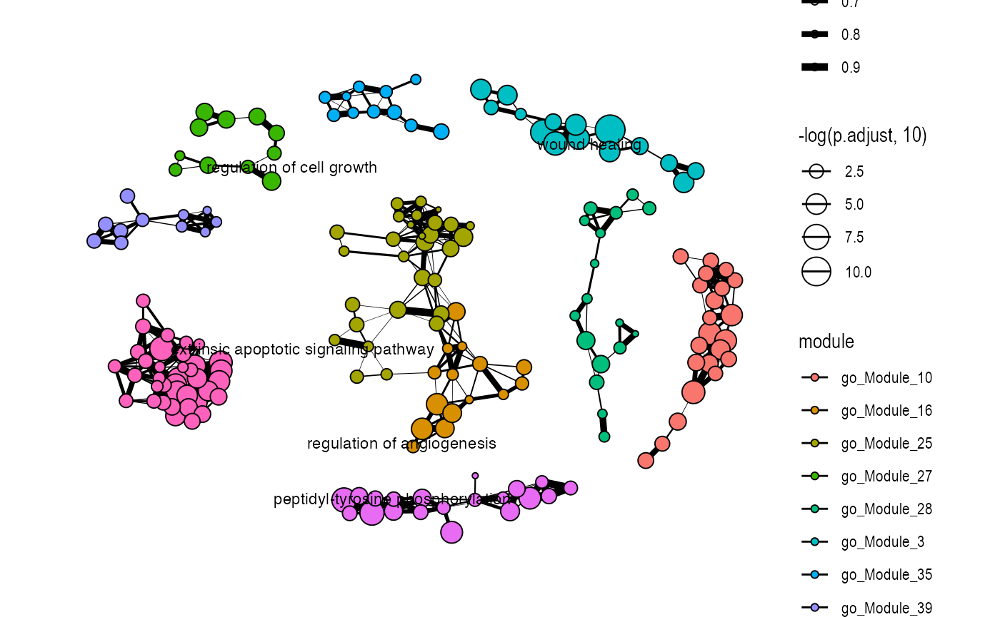
plot_similarity_network(
object = enriched_functional_module,
level = "module",
database = "go",
degree_cutoff = 10,
module_id = "go_Module_10",
text_all = TRUE
)
plot_similarity_network(
object = enriched_functional_module,
level = "module",
degree_cutoff = 0,
database = "go",
text_all = TRUE
)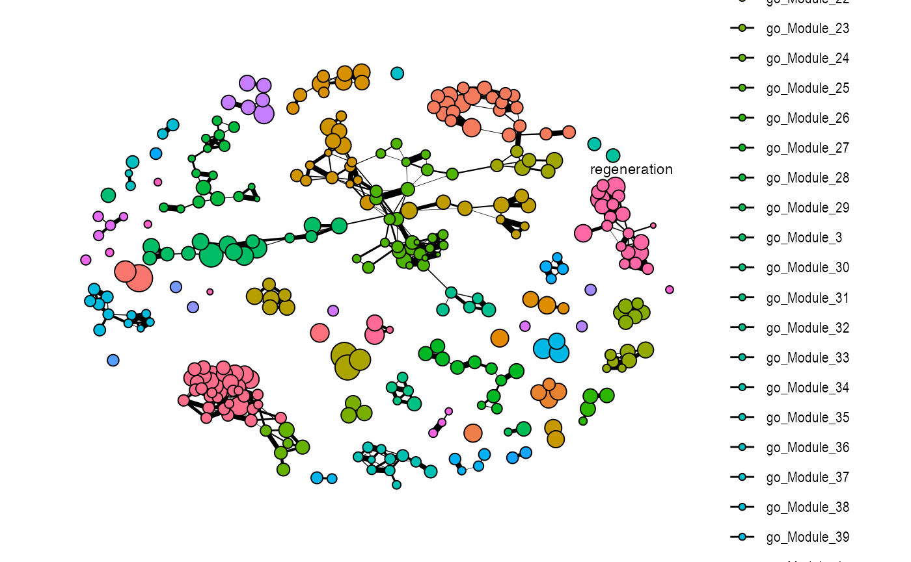
plot_similarity_network(
object = enriched_functional_module,
level = "module",
degree_cutoff = 0,
database = "kegg",
text_all = TRUE
)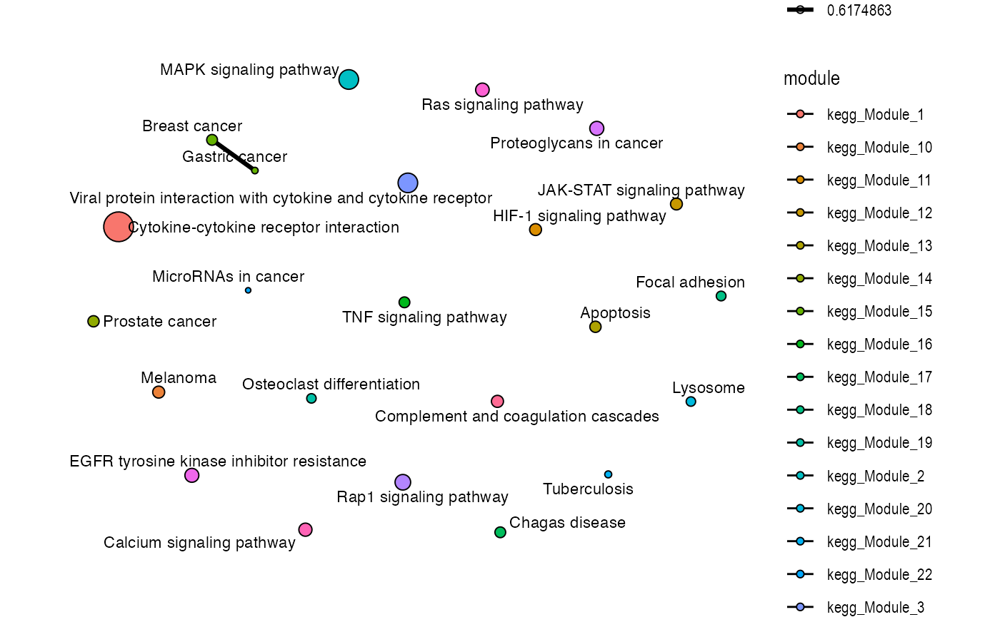
plot_similarity_network(
object = enriched_functional_module,
level = "module",
degree_cutoff = 1,
database = "reactome",
text_all = TRUE
)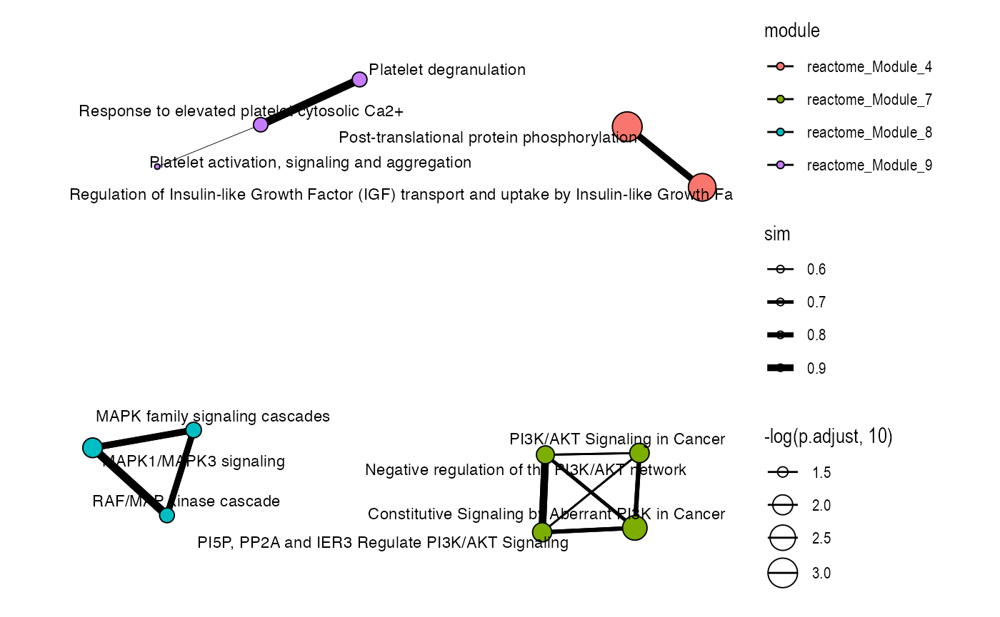
Relationship network for functional modules/modules/pathways/molecules
object <-
enriched_functional_module
object@merged_module$functional_module_result <-
head(object@merged_module$functional_module_result, 3)
plot_relationship_network(
object = object,
include_functional_modules = TRUE,
include_modules = TRUE,
include_pathways = TRUE,
include_molecules = TRUE,
functional_module_text = TRUE,
module_text = TRUE,
pathway_text = TRUE,
molecule_text = TRUE,
circular_plot = FALSE,
functional_module_arrange_position = TRUE,
module_arrange_position = TRUE,
pathway_arrange_position = TRUE,
molecule_arrange_position = TRUE,
functional_module_position_limits = c(0, 1),
module_position_limits = c(0, 1),
pathway_position_limits = c(0, 1),
molecule_position_limits = c(0, 1)
)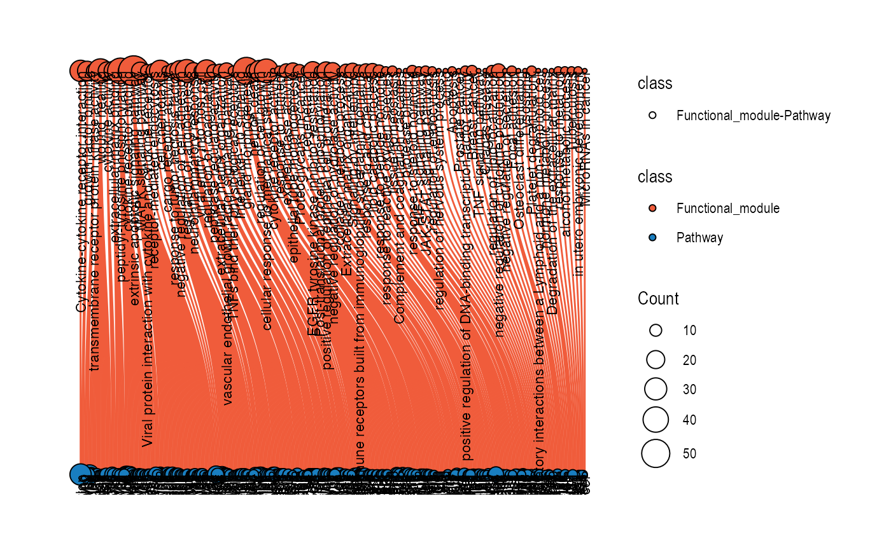
plot_relationship_network(
object = object,
include_functional_modules = TRUE,
include_modules = FALSE,
include_pathways = FALSE,
include_molecules = TRUE,
functional_module_text = TRUE,
module_text = TRUE,
pathway_text = TRUE,
molecule_text = TRUE,
circular_plot = TRUE,
functional_module_arrange_position = TRUE,
module_arrange_position = TRUE,
pathway_arrange_position = TRUE,
molecule_arrange_position = TRUE,
functional_module_position_limits = c(0, 1),
module_position_limits = c(0, 1),
pathway_position_limits = c(0, 1),
molecule_position_limits = c(0, 1)
)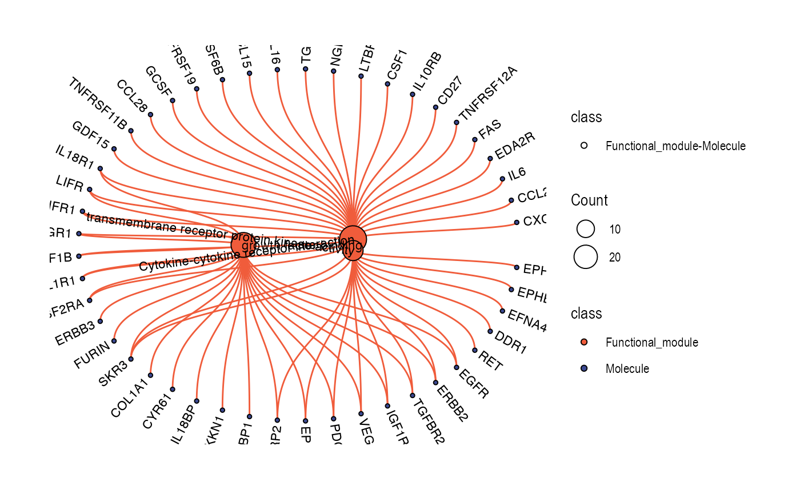
Export results as excel
export_functional_module(object = object)Session information
sessionInfo()
#> R version 4.3.0 (2023-04-21)
#> Platform: x86_64-apple-darwin20 (64-bit)
#> Running under: macOS 14.0
#>
#> Matrix products: default
#> BLAS: /Library/Frameworks/R.framework/Versions/4.3-x86_64/Resources/lib/libRblas.0.dylib
#> LAPACK: /Library/Frameworks/R.framework/Versions/4.3-x86_64/Resources/lib/libRlapack.dylib; LAPACK version 3.11.0
#>
#> locale:
#> [1] en_US.UTF-8/en_US.UTF-8/en_US.UTF-8/C/en_US.UTF-8/en_US.UTF-8
#>
#> time zone: America/Los_Angeles
#> tzcode source: internal
#>
#> attached base packages:
#> [1] stats4 stats graphics grDevices utils datasets methods
#> [8] base
#>
#> other attached packages:
#> [1] org.Hs.eg.db_3.17.0 AnnotationDbi_1.62.1 IRanges_2.34.0
#> [4] S4Vectors_0.38.1 Biobase_2.60.0 BiocGenerics_0.46.0
#> [7] mapa_0.1.1 ggplot2_3.4.2 dplyr_1.1.2
#> [10] magrittr_2.0.3 masstools_1.0.13 massdataset_1.0.27
#>
#> loaded via a namespace (and not attached):
#> [1] splines_4.3.0 ggplotify_0.1.0
#> [3] bitops_1.0-7 tibble_3.2.1
#> [5] polyclip_1.10-4 preprocessCore_1.62.1
#> [7] graph_1.78.0 XML_3.99-0.14
#> [9] lifecycle_1.0.3 topGO_2.52.0
#> [11] doParallel_1.0.17 rprojroot_2.0.3
#> [13] NLP_0.2-1 lattice_0.21-8
#> [15] MASS_7.3-58.4 openxlsx_4.2.5.2
#> [17] limma_3.56.2 sass_0.4.6
#> [19] rmarkdown_2.22 jquerylib_0.1.4
#> [21] yaml_2.3.7 remotes_2.4.2.1
#> [23] flexmix_2.3-19 zip_2.3.0
#> [25] cowplot_1.1.1 MsCoreUtils_1.12.0
#> [27] pbapply_1.7-0 DBI_1.1.3
#> [29] RColorBrewer_1.1-3 zlibbioc_1.46.0
#> [31] GenomicRanges_1.52.0 purrr_1.0.1
#> [33] ggraph_2.1.0 RCurl_1.98-1.12
#> [35] yulab.utils_0.0.6 nnet_7.3-18
#> [37] rappdirs_0.3.3 tweenr_2.0.2
#> [39] circlize_0.4.15 GenomeInfoDbData_1.2.10
#> [41] enrichplot_1.20.0 tm_0.7-11
#> [43] ggrepel_0.9.3 tidytree_0.4.2
#> [45] reactome.db_1.84.0 MSnbase_2.26.0
#> [47] annotate_1.78.0 pkgdown_2.0.7
#> [49] ggwordcloud_0.5.0 ncdf4_1.21
#> [51] codetools_0.2-19 DelayedArray_0.26.3
#> [53] DOSE_3.26.1 xml2_1.3.4
#> [55] ggforce_0.4.1 tidyselect_1.2.0
#> [57] shape_1.4.6 aplot_0.1.10
#> [59] farver_2.1.1 viridis_0.6.3
#> [61] matrixStats_1.0.0 jsonlite_1.8.5
#> [63] GetoptLong_1.0.5 tidygraph_1.2.3
#> [65] iterators_1.0.14 systemfonts_1.0.4
#> [67] foreach_1.5.2 tools_4.3.0
#> [69] treeio_1.24.1 ragg_1.2.5
#> [71] Rcpp_1.0.10 glue_1.6.2
#> [73] gridExtra_2.3 Rttf2pt1_1.3.12
#> [75] xfun_0.39 qvalue_2.32.0
#> [77] MatrixGenerics_1.12.2 GenomeInfoDb_1.36.0
#> [79] withr_2.5.0 BiocManager_1.30.21
#> [81] fastmap_1.1.1 fansi_1.0.4
#> [83] SparseM_1.81 digest_0.6.31
#> [85] gridGraphics_0.5-1 R6_2.5.1
#> [87] textshaping_0.3.6 colorspace_2.1-0
#> [89] simplifyEnrichment_1.10.0 GO.db_3.17.0
#> [91] RSQLite_2.3.1 utf8_1.2.3
#> [93] tidyr_1.3.0 generics_0.1.3
#> [95] data.table_1.14.8 corpcor_1.6.10
#> [97] graphlayouts_1.0.0 httr_1.4.6
#> [99] S4Arrays_1.0.4 scatterpie_0.2.1
#> [101] graphite_1.46.0 pkgconfig_2.0.3
#> [103] gtable_0.3.3 modeltools_0.2-23
#> [105] blob_1.2.4 ComplexHeatmap_2.16.0
#> [107] impute_1.74.1 XVector_0.40.0
#> [109] shadowtext_0.1.2 clusterProfiler_4.8.1
#> [111] htmltools_0.5.5 fgsea_1.26.0
#> [113] RBGL_1.76.0 MALDIquant_1.22.1
#> [115] ProtGenerics_1.32.0 clue_0.3-64
#> [117] scales_1.2.1 png_0.1-8
#> [119] ggfun_0.1.1 knitr_1.43
#> [121] rstudioapi_0.14 reshape2_1.4.4
#> [123] tzdb_0.4.0 rjson_0.2.21
#> [125] nlme_3.1-162 cachem_1.0.8
#> [127] GlobalOptions_0.1.2 stringr_1.5.0
#> [129] HDO.db_0.99.1 parallel_4.3.0
#> [131] extrafont_0.19 mzID_1.38.0
#> [133] vsn_3.68.0 desc_1.4.2
#> [135] ReactomePA_1.44.0 pillar_1.9.0
#> [137] grid_4.3.0 proxyC_0.3.3
#> [139] vctrs_0.6.2 pcaMethods_1.92.0
#> [141] slam_0.1-50 xtable_1.8-4
#> [143] cluster_2.1.4 extrafontdb_1.0
#> [145] evaluate_0.21 readr_2.1.4
#> [147] cli_3.6.1 compiler_4.3.0
#> [149] rlang_1.1.1 crayon_1.5.2
#> [151] labeling_0.4.2 affy_1.78.0
#> [153] plyr_1.8.8 fs_1.6.2
#> [155] stringi_1.7.12 viridisLite_0.4.2
#> [157] BiocParallel_1.34.2 munsell_0.5.0
#> [159] Biostrings_2.68.1 lazyeval_0.2.2
#> [161] GOSemSim_2.26.0 Matrix_1.5-4
#> [163] GOSim_1.38.0 hms_1.1.3
#> [165] patchwork_1.1.2 bit64_4.0.5
#> [167] KEGGREST_1.40.0 highr_0.10
#> [169] SummarizedExperiment_1.30.2 mzR_2.34.0
#> [171] igraph_1.4.3 memoise_2.0.1
#> [173] RcppParallel_5.1.7 affyio_1.70.0
#> [175] bslib_0.5.0 ggtree_3.8.0
#> [177] fastmatch_1.1-3 bit_4.0.5
#> [179] downloader_0.4 gson_0.1.0
#> [181] ape_5.7-1